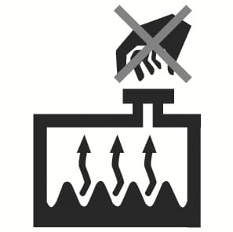
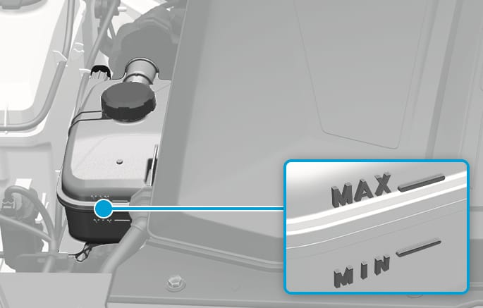
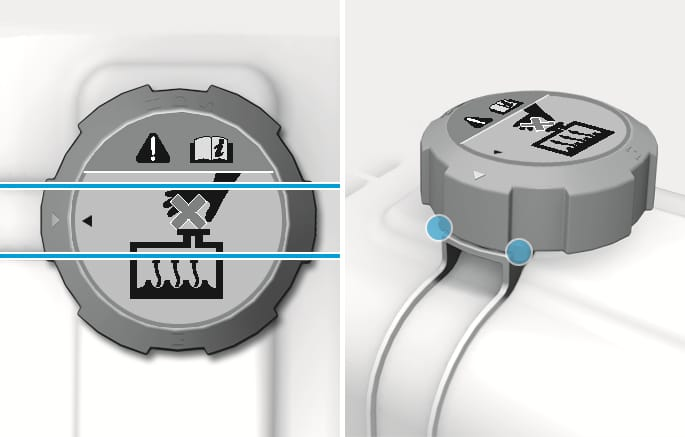

냉각수 점검하기

WL_RadiatorHotWarning
-
냉각수 레벨을 확인하기 전 차량의 전기 동력 장치가 충분히 식었는지 확인하십시오. 뜨거운 냉각수와 수증기가 뿜어져 나오는 경우 심각한 화상을 입을 수 있습니다.
-
냉각수 보조 탱크 캡을 열 때 부직포나 두꺼운 헝겊 등으로 캡 주위를 감싼 뒤 천천히 여십시오.
-
냉각수를 보충하거나 교체한 후 보조 탱크 캡을 완전히 잠그십시오. 캡이 완전히 잠기지 않으면 주행 중 냉각수가 넘쳐 모터가 과열될 수 있습니다.
-
냉각수의 혼합 비율을 점검하십시오.부동액의 농도가 35 % 미만이거나 60 % 초과이면 냉각 회로 내부가 부식되거나 과열될 수 있습니다.
-
냉각수가 흘러내리면 모터룸 내 다른 부품이 손상될 수 있습니다.
-
냉각수를 보충한 후 누수가 없는지 확인하십시오.
-
냉각수를 보충한 뒤 며칠 후에 냉각수량을 한 번 더 점검하고 필요하면 보충하십시오.
-
냉각수가 없는 상태로 주행하지 마십시오. 전기 동력 장치가 과열되거나 워터 펌프가 손상될 수 있습니다.
-
부동액 혼합 비율이 너무 높거나 낮은 경우 냉각 성능이 저하됩니다. 부동액 비율이 60 % 이상이거나 35 % 이하인 냉각수는 사용하지 마십시오.
-
수돗물 또는 증류수를 사용해 부동액을 희석하십시오. 소금물이나 지하수 등의 경수는 절대 사용하지 마십시오.
-
부동액, 방청제 및 시판되는 롱라이프 부동액(LLC) 등의 혼용을 피하십시오.
-
알코올 또는 메탄올 계열의 냉각수를 그대로 사용하거나 적합한 냉각수와 섞어 사용하지 마십시오. 모터룸 내부에는 각종 알루미늄 부품이 장착되어 있으므로 , 동결과 부식을 방지하기 위해서는 인산염계 에틸렌-글리콜 성분의 냉각수만을 사용해야 합니다.
-
차량의 시동을 끄고 전기 동력 장치가 충분히 식을 때까지 기다리십시오.
-
냉각수 레벨은 온도에 따라 달라집니다.
-
-
후드를 열고 냉각수 보조 탱크 옆면에 표시된 냉각수 레벨을 확인하십시오('모터룸 각부 명칭' 참고).
-
차량의 전기 동력 장치가 식었을 때 냉각수 레벨이 'MAX'와 'MIN' 표시선 사이를 유지해야합니다.

2C_Coolant
-
-
냉각수 레벨이 'MIN' 표시선에 가까운 경우, 냉각수 보조 탱크 캡을 열고 냉각수를 'MAX' 표시선까지 보충하십시오('냉각수 혼합 비율' 참고).
-
차량 출고 시의 냉각수 혼합 비율은 45 %입니다.
-
-
냉각수 보조 탱크 캡을 닫고 완전히 잠그십시오.
-
캡 윗면의 그림이 수평 상태이며, 옆면의 돌기가 멈춤 위치에 밀착되어야 합니다.

2C_CheckCoolantCapLocked
-
냉각수를 보충한 후에도 냉각수가 현저하게 감소하는 경우 당사 직영 하이테크센터나 블루핸즈에서 차량을 점검하십시오.
-
냉각수 혼합 비율
품질과 성능이 적합한 사계절 부동액을 적정 비율로 희석해 사용하십시오.
부적합한 부동액을 사용하거나 부동액의 비율이 적절하지 않으면 냉각 시스템 내에 부식이나 침전이 발생해 전기 동력 장치가 과열될 수 있습니다. 순정 부동액은 현대자동차가 품질과 성능을 보증하는 제품입니다.
|
주위 온도(℃) |
부동액 비율 |
물 비율 |
|
-15 |
35 % |
65 % |
|
-25 |
40 % |
60 % |
|
-35 |
50 % |
50 % |
|
-45 |
60 % |
40 % |
냉각수의 부동, 방청 성능은 시간이 지나면서 저하됩니다.
정기 점검 주기표에 따라 당사 직영 하이테크센터나 블루핸즈에서 냉각수를 교체하십시오.
성능이 저하된 냉각수를 사용하면 부품이 동파되거나 부품 내부에 녹이 발생할 수 있습니다.